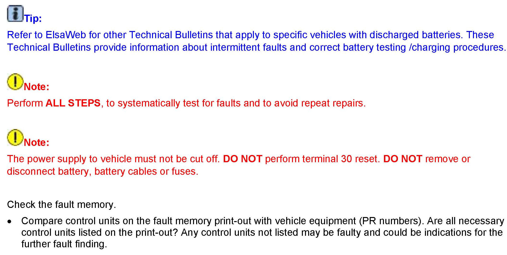

Electrical - Diagnosis for Excessive Static Current Draw
27 11 05December 15, 2011
2016076, Supersedes Technical Bulletin V270804 dated August 28, 2008 to include additional models and model year applicability.

Vehicle Information
Condition
Battery, Discharged, Diagnosis for Excessive Static Current Draw
One or more of the following symptoms is possible.
^ Discharged battery
^ Engine does not start because of low battery voltage
^ Voltage display in the combination instrument displays too low
^ "Low battery" fault codes in various control modules.
Production Solution
Battery/Current draw procedure introduced in VAS 5051A/B scan tool with the release of software version 11.78.00.

Service
Warranty
Information only.
Required Parts and Tools
No Special Parts required.
No Special Parts required.
Additional Information
All part and service references provided in this Technical Bulletin are subject to change and/or removal.
Always check with your Parts Dept. and Repair Manuals for the latest information.